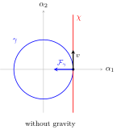
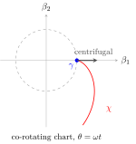
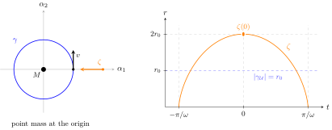
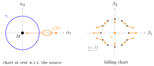
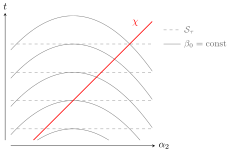

Appendix C • Examples
C.8 Example of Newton–Cartan Theory (§§9.1–9.5)
This appendix illustrates the pseudo-forces of Subsection 9.4 and the encoding of gravity in the connection (Subsection 9.5) on simple worldlines. Without gravity, we follow a uniform circular motion and a uniform straight motion through the same event with the same velocity, in a stratified chart at rest and in two rigidly moving ones. Around a point mass, we keep the circular motion, now an orbit, and follow a body falling radially from rest, also in a chart attached to it, which exhibits the tidal acceleration. Finally, we revisit both settings in a chart which is not stratified. In every case we ask whether the worldline satisfies Newton II with \(\mathcal{F}_\gamma = 0\), i.e. Newton I, and, if not, which force it requires. A force is a vector field along the worldline, so the required force is the same in every chart, and only its component functions change; pseudo-forces, in contrast, appear and disappear with the chart.
As in Subsection 9.4.1, the coordinates of a point are written \(\alpha = (\alpha_0, \alpha_1, \alpha_2, \alpha_3)\) in the chart \((\mathcal{U}, \mathscr{X})\) and \(\beta = (\beta_0, \beta_1, \beta_2, \beta_3)\) in the chart \((\mathcal{V}, \mathscr{Y})\) under study, which is redefined in each item; dots denote derivatives w.r.t. absolute time \(t\). The component functions of a force w.r.t. each chart are written \(f^k_\mathcal{U}(t) \coloneqq (dx^k)_{\gamma(t)}\big( \mathcal{F}_\gamma(t) \big)\) and \(f^k_\mathcal{V}(t) \coloneqq (dy^k)_{\gamma(t)}\big( \mathcal{F}_\gamma(t) \big)\). Being the components of one and the same vector, they are related by the transformation law of vector components, \(f^k_\mathcal{V} = \frac{\partial \mathscr{Y}^k}{\partial \mathscr{X}^l} \, f^l_\mathcal{U}\).
C.8.1 Setup
The smooth manifold is \(\mathcal{M} \coloneqq \mathbb{R}^4\), with points \(p = (p_0, p_1, p_2, p_3)\), the standard topology, and the maximal atlas containing the identity chart \(\mathscr{X} : \mathcal{U} = \mathcal{M} \to \mathbb{R}^4\), \(p \mapsto (p_0, p_1, p_2, p_3)\). The absolute time is \(t(p) \coloneqq p_0\), so \(\left. dt \right|_\mathcal{U} = dx^0\) and \((\mathcal{U}, \mathscr{X})\) is stratified.
For constants \(r_0 > 0\) and \(\omega > 0\), consider the two worldlines, parametrized by absolute time, \begin{align*} \gamma(t) \coloneqq \big( t, \, r_0 \cos \omega t, \, r_0 \sin \omega t, \, 0 \big), \qquad \chi(t) \coloneqq \big( t, \, r_0, \, r_0 \omega t, \, 0 \big), \end{align*} a uniform circular motion of radius \(r_0\) about the third axis, and a uniform straight motion along the tangent of that circle at \((\alpha_1, \alpha_2, \alpha_3) = (r_0, 0, 0)\). Both pass through the event \(\mathscr{X}^{-1}(0, r_0, 0, 0)\) with the same velocity, of components \((1, 0, r_0\omega, 0)\), as Figure C.14 shows. \begin{align*} \begin{pmatrix} \gamma^0_\mathcal{U} \\ \gamma^1_\mathcal{U} \\ \gamma^2_\mathcal{U} \\ \gamma^3_\mathcal{U} \end{pmatrix} &= \begin{pmatrix} t \\ r_0 \cos \omega t \\ r_0 \sin \omega t \\ 0 \end{pmatrix}, & \begin{pmatrix} \dot{\gamma}^0_\mathcal{U} \\ \dot{\gamma}^1_\mathcal{U} \\ \dot{\gamma}^2_\mathcal{U} \\ \dot{\gamma}^3_\mathcal{U} \end{pmatrix} &= \begin{pmatrix} 1 \\ - r_0 \omega \sin \omega t \\ r_0 \omega \cos \omega t \\ 0 \end{pmatrix}, & \begin{pmatrix} \ddot{\gamma}^0_\mathcal{U} \\ \ddot{\gamma}^1_\mathcal{U} \\ \ddot{\gamma}^2_\mathcal{U} \\ \ddot{\gamma}^3_\mathcal{U} \end{pmatrix} &= \begin{pmatrix} 0 \\ - r_0 \omega^2 \cos \omega t \\ - r_0 \omega^2 \sin \omega t \\ 0 \end{pmatrix}, \\[4pt] \begin{pmatrix} \chi^0_\mathcal{U} \\ \chi^1_\mathcal{U} \\ \chi^2_\mathcal{U} \\ \chi^3_\mathcal{U} \end{pmatrix} &= \begin{pmatrix} t \\ r_0 \\ r_0 \omega t \\ 0 \end{pmatrix}, & \begin{pmatrix} \dot{\chi}^0_\mathcal{U} \\ \dot{\chi}^1_\mathcal{U} \\ \dot{\chi}^2_\mathcal{U} \\ \dot{\chi}^3_\mathcal{U} \end{pmatrix} &= \begin{pmatrix} 1 \\ 0 \\ r_0 \omega \\ 0 \end{pmatrix}, & \begin{pmatrix} \ddot{\chi}^0_\mathcal{U} \\ \ddot{\chi}^1_\mathcal{U} \\ \ddot{\chi}^2_\mathcal{U} \\ \ddot{\chi}^3_\mathcal{U} \end{pmatrix} &= \begin{pmatrix} 0 \\ 0 \\ 0 \\ 0 \end{pmatrix}, \end{align*}
C.8.2 Without Gravity
The connection is defined by \(\Gamma_\mathscr{X} = 0\). It is torsion free, absolute time flows uniformly, \(\left( \Gamma_\mathscr{X} \right)^0_{ki} = 0\), and \(\mathrm{Riem} = 0\): a Newtonian spacetime without gravity, in which \((\mathcal{U}, \mathscr{X})\) is an inertial chart.

Inertial chart. Newton II reads \(m \, \ddot{\gamma}^\alpha_\mathcal{U} = f^\alpha_\mathcal{U}\). \begin{align*} \ddot{\gamma}^k_\mathcal{U} + \underbrace{\left( \Gamma_\mathscr{X} \right)^k_{ji}}_{= \, 0} \, \dot{\gamma}^i_\mathcal{U} \, \dot{\gamma}^j_\mathcal{U} = \frac{f^k_\mathcal{U}}{m} \quad \longrightarrow \quad m \begin{pmatrix} \ddot{\gamma}^0_\mathcal{U} \\ \ddot{\gamma}^1_\mathcal{U} \\ \ddot{\gamma}^2_\mathcal{U} \\ \ddot{\gamma}^3_\mathcal{U} \end{pmatrix} = \begin{pmatrix} f^0_\mathcal{U} \\ f^1_\mathcal{U} \\ f^2_\mathcal{U} \\ f^3_\mathcal{U} \end{pmatrix} \end{align*}
Straight motion. \(\ddot{\chi}^\alpha_\mathcal{U} = 0\), so \(f^\alpha_\mathcal{U} = 0\): \(\chi\) is free (Newton I). \begin{align*} m \begin{pmatrix} \ddot{\chi}^0_\mathcal{U} \\ \ddot{\chi}^1_\mathcal{U} \\ \ddot{\chi}^2_\mathcal{U} \\ \ddot{\chi}^3_\mathcal{U} \end{pmatrix} = m \begin{pmatrix} 0 \\ 0 \\ 0 \\ 0 \end{pmatrix} = \begin{pmatrix} f^0_\mathcal{U} \\ f^1_\mathcal{U} \\ f^2_\mathcal{U} \\ f^3_\mathcal{U} \end{pmatrix} \end{align*}
Circular motion. of constant magnitude \(m \omega^2 r_0\), pointing towards the axis. Its time component vanishes, \(f^0_\mathcal{U} = 0\), as it must for a force. \begin{align*} m \begin{pmatrix} \ddot{\gamma}^0_\mathcal{U} \\ \ddot{\gamma}^1_\mathcal{U} \\ \ddot{\gamma}^2_\mathcal{U} \\ \ddot{\gamma}^3_\mathcal{U} \end{pmatrix} = m \begin{pmatrix} 0 \\ - r_0 \omega^2 \cos \omega t \\ - r_0 \omega^2 \sin \omega t \\ 0 \end{pmatrix} = \begin{pmatrix} f^0_\mathcal{U} \\ f^1_\mathcal{U} \\ f^2_\mathcal{U} \\ f^3_\mathcal{U} \end{pmatrix} \end{align*} so \(\gamma\) is not free, and Newton II requires the force \begin{align*} f^\alpha_\mathcal{U} = - m \omega^2 \gamma^\alpha_\mathcal{U} = - m \omega^2 r_0 \, \big( \cos \omega t, \, \sin \omega t, \, 0 \big) \longrightarrow f_\mathcal{U} = -m \omega^2 r_0 \, \left( \cos \omega t \, \partial x_1 + \sin \omega t \, \partial x_2 \right) \end{align*}

Figure C.15: Spatial paths of \(\gamma\) and \(\chi\) in the co-rotating chart \((\mathcal{V}, \mathscr{Y})\), projected onto \(\beta_3 = 0\). The circular motion \(\gamma\) is at rest at \((r_0, 0)\). The straight motion \(\chi\) starts at rest at the same point, is pushed outwards by the centrifugal term and bent backwards by the Coriolis term, tracing an involute of the circle of radius \(r_0\) (dashed). Without gravity, \(\gamma\) stays at rest only thanks to a force balancing the centrifugal term; around a point mass with \(\omega^2 = GM/r_0^3\), gravity balances it instead (Subsection C.8.3). Rotating axes. Let \(\mathcal{V} = \mathcal{M}\) and \((\mathcal{V}, \mathscr{Y})\) the chart of Subsection 9.4 with \(\theta(t) = \omega t\) and \(b = 0\), co-rotating, with \(\dot{\theta} = \omega\), \(\ddot{\theta} = 0\) and \(\ddot{b} = 0\), the spatial part of Newton II derived there becomes, for any worldline, \begin{align*} m \begin{pmatrix} \ddot{\gamma}^1_\mathcal{V} \\ \ddot{\gamma}^2_\mathcal{V} \\ \ddot{\gamma}^3_\mathcal{V} \end{pmatrix} &= \begin{pmatrix} f^1_\mathcal{V} \\ f^2_\mathcal{V} \\ f^3_\mathcal{V} \end{pmatrix} + \underbrace{2 m \dot{\theta} \begin{pmatrix} \dot{\gamma}^2_\mathcal{V} \\ - \dot{\gamma}^1_\mathcal{V} \\ 0 \end{pmatrix}}_{\text{Coriolis}} + \underbrace{m \dot{\theta}^2 \begin{pmatrix} \gamma^1_\mathcal{V} \\ \gamma^2_\mathcal{V} \\ 0 \end{pmatrix}}_{\text{centrifugal}} + \underbrace{m \underbrace{\ddot{\theta}}_{= \, 0} \begin{pmatrix} \gamma^2_\mathcal{V} \\ - \gamma^1_\mathcal{V} \\ 0 \end{pmatrix}}_{\text{Euler}} \underbrace{- \, m \begin{pmatrix} \cos \theta \, \ddot{b}^1 + \sin \theta \, \ddot{b}^2 \\ - \sin \theta \, \ddot{b}^1 + \cos \theta \, \ddot{b}^2 \\ \ddot{b}^3 \end{pmatrix}}_{\text{translational} \, = \, 0} \\ &= \begin{pmatrix} f^1_\mathcal{V} + 2 m \omega \, \dot{\gamma}^2_\mathcal{V} + m \omega^2 \, \gamma^1_\mathcal{V} \\ f^2_\mathcal{V} - 2 m \omega \, \dot{\gamma}^1_\mathcal{V} + m \omega^2 \, \gamma^2_\mathcal{V} \\ f^3_\mathcal{V} \end{pmatrix}. \end{align*}
Straight motion. \begin{align*} \begin{pmatrix} \chi^0_\mathcal{V} \\ \chi^1_\mathcal{V} \\ \chi^2_\mathcal{V} \\ \chi^3_\mathcal{V} \end{pmatrix} = \textrm{\runic ᛖ}_{\mathcal{U}\mathcal{V}} \begin{pmatrix} \chi^0_\mathcal{U} \\ \chi^1_\mathcal{U} \\ \chi^2_\mathcal{U} \\ \chi^3_\mathcal{U} \end{pmatrix} = \textrm{\runic ᛖ}_{\mathcal{U}\mathcal{V}} \begin{pmatrix} t \\ r_0 \\ r_0 \omega t \\ 0 \end{pmatrix} = \begin{pmatrix} t \\ r_0 \cos \omega t + r_0 \omega t \sin \omega t \\ - r_0 \sin \omega t + r_0 \omega t \cos \omega t \\ 0 \end{pmatrix}, \end{align*} while its velocity, an element of \(T_{\chi(t)}\mathcal{M}\), transforms with the Jacobian of the transition map, here with \(\theta = \omega t\), \(b = 0\), evaluated at \((\beta_1, \beta_2, \beta_3) = (\chi^1_\mathcal{V}, \chi^2_\mathcal{V}, \chi^3_\mathcal{V})\): \begin{align*} \begin{pmatrix} \dot{\chi}^0_\mathcal{V} \\ \dot{\chi}^1_\mathcal{V} \\ \dot{\chi}^2_\mathcal{V} \\ \dot{\chi}^3_\mathcal{V} \end{pmatrix} &= \left( \frac{\partial \mathscr{Y}^i}{\partial \mathscr{X}^s} \right) \begin{pmatrix} \dot{\chi}^0_\mathcal{U} \\ \dot{\chi}^1_\mathcal{U} \\ \dot{\chi}^2_\mathcal{U} \\ \dot{\chi}^3_\mathcal{U} \end{pmatrix} = \begin{pmatrix} 1 & 0 & 0 & 0 \\ \omega \, \chi^2_\mathcal{V} & \cos \omega t & \sin \omega t & 0 \\ - \omega \, \chi^1_\mathcal{V} & - \sin \omega t & \cos \omega t & 0 \\ 0 & 0 & 0 & 1 \end{pmatrix} \begin{pmatrix} 1 \\ 0 \\ r_0 \omega \\ 0 \end{pmatrix} \\ &= \begin{pmatrix} 1 \\ \omega \big( - r_0 \sin \omega t + r_0 \omega t \cos \omega t \big) + r_0 \omega \sin \omega t \\ - \omega \big( r_0 \cos \omega t + r_0 \omega t \sin \omega t \big) + r_0 \omega \cos \omega t \\ 0 \end{pmatrix} = \begin{pmatrix} 1 \\ r_0 \omega^2 t \cos \omega t \\ - r_0 \omega^2 t \sin \omega t \\ 0 \end{pmatrix}, \end{align*} so that, differentiating once more, \begin{align*} \begin{pmatrix} \ddot{\chi}^0_\mathcal{V} \\ \ddot{\chi}^1_\mathcal{V} \\ \ddot{\chi}^2_\mathcal{V} \\ \ddot{\chi}^3_\mathcal{V} \end{pmatrix} = \begin{pmatrix} 0 \\ r_0 \omega^2 \big( \cos \omega t - \omega t \sin \omega t \big) \\ - r_0 \omega^2 \big( \sin \omega t + \omega t \cos \omega t \big) \\ 0 \end{pmatrix}. \end{align*} Substituting the component functions of \(\chi\) into the spatial part of Newton II in the co-rotating chart, and solving for the force, \begin{align*} \begin{pmatrix} f^1_\mathcal{V} \\ f^2_\mathcal{V} \\ f^3_\mathcal{V} \end{pmatrix} &= m \begin{pmatrix} \ddot{\chi}^1_\mathcal{V} \\ \ddot{\chi}^2_\mathcal{V} \\ \ddot{\chi}^3_\mathcal{V} \end{pmatrix} \underbrace{- \, 2 m \omega \begin{pmatrix} \dot{\chi}^2_\mathcal{V} \\ - \dot{\chi}^1_\mathcal{V} \\ 0 \end{pmatrix}}_{- \, \text{Coriolis}} \underbrace{- \, m \omega^2 \begin{pmatrix} \chi^1_\mathcal{V} \\ \chi^2_\mathcal{V} \\ 0 \end{pmatrix}}_{- \, \text{centrifugal}} \\ &= m r_0 \omega^2 \begin{pmatrix} \cos \omega t - \omega t \sin \omega t \\ - \sin \omega t - \omega t \cos \omega t \\ 0 \end{pmatrix} - 2 m \omega \begin{pmatrix} - r_0 \omega^2 t \sin \omega t \\ - r_0 \omega^2 t \cos \omega t \\ 0 \end{pmatrix} - m \omega^2 \begin{pmatrix} r_0 \cos \omega t + r_0 \omega t \sin \omega t \\ - r_0 \sin \omega t + r_0 \omega t \cos \omega t \\ 0 \end{pmatrix} \\ &= m r_0 \omega^2 \begin{pmatrix} \cos \omega t - \omega t \sin \omega t + 2 \omega t \sin \omega t - \cos \omega t - \omega t \sin \omega t \\ - \sin \omega t - \omega t \cos \omega t + 2 \omega t \cos \omega t + \sin \omega t - \omega t \cos \omega t \\ 0 \end{pmatrix} = \begin{pmatrix} 0 \\ 0 \\ 0 \end{pmatrix}, \quad \checkmark \end{align*} so \(\chi\) is still free, as it must be. At \(t = 0\) both worldlines are at rest at \((\beta_1, \beta_2, \beta_3) = (r_0, 0, 0)\), \(\dot{\chi}^\alpha_\mathcal{V}(0) = 0\), but \(\chi\) starts “accelerating” outwards, \begin{align*} m \begin{pmatrix} \ddot{\chi}^1_\mathcal{V}(0) \\ \ddot{\chi}^2_\mathcal{V}(0) \\ \ddot{\chi}^3_\mathcal{V}(0) \end{pmatrix} = \underbrace{2 m \omega \begin{pmatrix} 0 \\ 0 \\ 0 \end{pmatrix}}_{\text{Coriolis}} + \underbrace{m \omega^2 \begin{pmatrix} r_0 \\ 0 \\ 0 \end{pmatrix}}_{\text{centrifugal}} = \begin{pmatrix} m r_0 \omega^2 \\ 0 \\ 0 \end{pmatrix}, \end{align*} driven by the unbalanced centrifugal term, while the Coriolis term, growing with its velocity, bends it backwards against the rotation. Its path is a spiral, the involute of the circle (Figure C.15).
Circular motion. In the co-rotating chart \(\gamma\) is at rest, \(\gamma^\alpha_\mathcal{V} = (r_0, 0, 0)\), so the Coriolis terms vanish and Newton II reduces to \begin{gather*} \begin{pmatrix} \dot{\gamma}^1_\mathcal{V} \\ \dot{\gamma}^2_\mathcal{V} \\ \dot{\gamma}^3_\mathcal{V} \end{pmatrix} = \begin{pmatrix} \ddot{\gamma}^1_\mathcal{V} \\ \ddot{\gamma}^2_\mathcal{V} \\ \ddot{\gamma}^3_\mathcal{V} \end{pmatrix} = \begin{pmatrix} 0 \\ 0 \\ 0 \end{pmatrix} \quad \longrightarrow \quad 0 = f^1_\mathcal{V} + m \omega^2 r_0, \quad 0 = f^2_\mathcal{V} \longrightarrow f^\alpha_\mathcal{V} = \big( - m \omega^2 r_0, \, 0, \, 0 \big). \end{gather*} This is the same force as before, now read more explicitly as balancing the centrifugal pseudo-force: in the rotating chart the string keeps the particle at rest.
C.8.3 With Gravity: a Point Mass
We now keep the circular motion \(\gamma\), which becomes an orbit, and replace the straight motion by a body released from rest at twice the orbital radius, which falls radially towards the source. Following this body with a chart attached to it shows how far gravity can be transformed away: along its worldline, but not around it.
Connection. A point mass \(M\) sits at the spatial origin. We work on \(\mathcal{U} \coloneqq \{ p \in \mathcal{M} \mid (p_1, p_2, p_3) \neq (0, 0, 0) \}\), i.e. \(\mathcal{M}\) without the worldline of the source, with the potential of Subsection 9.5, \begin{align*} \Phi(\alpha) \coloneqq \big( \phi \circ \mathscr{X}^{-1} \big)(\alpha) = - \frac{G M}{|\alpha|}, \qquad \left( \Gamma_\mathscr{X} \right)^\sigma_{00}(\alpha) = \partial_\sigma \Phi(\alpha) = \frac{G M \, \alpha_\sigma}{|\alpha|^3}, \qquad \text{all other } \left( \Gamma_\mathscr{X} \right)^i_{jk} = 0, \end{align*} with \(|\alpha| \coloneqq \sqrt{\textstyle\sum_\beta (\alpha_\beta)^2}\). On \(\mathcal{U}\), \(\Delta \Phi = 0\): the field equation holds with \(\rho = 0\), the mass sitting on the removed worldline. \begin{gather*} \partial_\sigma \Phi(\alpha) = \partial_\sigma \bigg[ - G M \Big( \textstyle\sum_\beta (\alpha_\beta)^2 \Big)^{-1/2} \bigg] = - G M \Big( - \frac{1}{2} \Big) \Big( \textstyle\sum_\beta (\alpha_\beta)^2 \Big)^{-3/2} \, 2 \, \alpha_\sigma = \frac{G M \, \alpha_\sigma}{|\alpha|^3}, \\ \begin{pmatrix} \left( \Gamma_\mathscr{X} \right)^1_{00} \\ \left( \Gamma_\mathscr{X} \right)^2_{00} \\ \left( \Gamma_\mathscr{X} \right)^3_{00} \end{pmatrix} = \begin{pmatrix} \partial_1 \Phi \\ \partial_2 \Phi \\ \partial_3 \Phi \end{pmatrix} = \frac{G M}{|\alpha|^3} \begin{pmatrix} \alpha_1 \\ \alpha_2 \\ \alpha_3 \end{pmatrix} \end{gather*} The curvature does not vanish, \begin{gather*} \mathrm{Riem}^\alpha_{0\beta0} = \partial_\beta \Gamma^\alpha_{00} - \partial_0 \underbrace{\Gamma^\alpha_{0\beta}}_{= \, 0} + \underbrace{\Gamma^\alpha_{r\beta}}_{= \, 0} \, \Gamma^r_{00} - \Gamma^\alpha_{r0} \, \underbrace{\Gamma^r_{0\beta}}_{= \, 0} = \partial_\beta \Gamma^\alpha_{00} = \partial_\beta \partial_\alpha \Phi, \\ \partial_\kappa \partial_\sigma \Phi = \partial_\kappa \bigg[ G M \, \alpha_\sigma \Big( \textstyle\sum_\delta (\alpha_\delta)^2 \Big)^{-3/2} \bigg] = G M \bigg[ \delta_{\sigma\kappa} \, |\alpha|^{-3} + \alpha_\sigma \Big( - \frac{3}{2} \Big) |\alpha|^{-5} \, 2 \, \alpha_\kappa \bigg], \\ \mathrm{Riem}^\sigma_{0\kappa0} = \partial_\kappa \partial_\sigma \Phi = \frac{G M}{|\alpha|^5} \Big( |\alpha|^2 \, \delta_{\sigma\kappa} - 3 \, \alpha_\sigma \alpha_\kappa \Big) \neq 0, \end{gather*} so no chart removes all connection coefficient functions on any open set, and \((\mathcal{U}, \mathscr{X})\), while still non-rotating and at rest w.r.t. the source, is no longer inertial.

Figure C.16: Left: spatial paths of the worldlines \(\gamma\) and \(\zeta\) in the chart \((\mathcal{U}, \mathscr{X})\), projected onto the plane \(\alpha_3 = 0\). Around a point mass \(M\) with \(\omega^2 = GM/r_0^3\), \(\gamma\) is free, now as an orbit, and so is the body \(\zeta\) of Subsection C.8.3, released from rest at distance \(2 r_0\) and falling radially into the mass. Right: distance \(r = |\zeta_\mathcal{U}|\) of the radially falling body \(\zeta\) to the source as a function of absolute time, obtained from the parametric solution \(t(r) = \frac{2}{\omega} \big( \sqrt{x (1 - x)} + \arccos \sqrt{x} \big)\), \(x = r / (2 r_0)\), and its mirror image \(r(-t) = r(t)\). The body is at rest at \(r = 2 r_0\) at \(t = 0\) and reaches the source at \(t = \pm \pi / \omega\), half an orbital period of the circular orbit \(\gamma\), whose constant radius \(r_0\) is shown for comparison (dashed). Chart at rest w.r.t. the source. \begin{gather*} m \begin{pmatrix} \ddot{\gamma}^1_\mathcal{U} \\ \ddot{\gamma}^2_\mathcal{U} \\ \ddot{\gamma}^3_\mathcal{U} \end{pmatrix} = \begin{pmatrix} f^1_\mathcal{U} \\ f^2_\mathcal{U} \\ f^3_\mathcal{U} \end{pmatrix} - \frac{G M m}{|\gamma_\mathcal{U}|^3} \begin{pmatrix} \gamma^1_\mathcal{U} \\ \gamma^2_\mathcal{U} \\ \gamma^3_\mathcal{U} \end{pmatrix} \end{gather*}
Circular motion. \begin{gather*} m \begin{pmatrix} - r_0 \omega^2 \cos \omega t \\ - r_0 \omega^2 \sin \omega t \\ 0 \end{pmatrix} = \begin{pmatrix} f^1_\mathcal{U} \\ f^2_\mathcal{U} \\ f^3_\mathcal{U} \end{pmatrix} - \frac{G M m}{r_0^3} \begin{pmatrix} r_0 \cos \omega t \\ r_0 \sin \omega t \\ 0 \end{pmatrix}, \\ - m \omega^2 \gamma^\alpha_\mathcal{U} = f^\alpha_\mathcal{U} - \frac{G M m}{r_0^3} \, \gamma^\alpha_\mathcal{U} \longrightarrow f^\alpha_\mathcal{U} = m \Big( \frac{G M}{r_0^3} - \omega^2 \Big) \gamma^\alpha_\mathcal{U}, \end{gather*} which vanishes if and only if \(\omega^2 = G M / r_0^3\), Kepler’s third law for circular orbits. From now on we assume it. Then \(\gamma\) is free: the connection alone supplies exactly the inward acceleration that the string supplied without gravity, and the circular orbit is an autoparallel.
Radial free fall. Consider the worldline \(\zeta(t) \coloneqq \mathscr{X}^{-1}\big( t, \, r(t), \, 0, \, 0 \big)\) of a body at rest at \((\alpha_1, \alpha_2, \alpha_3) = (2 r_0, 0, 0)\) at \(t = 0\). Applying Newton II with \(f_\mathcal{U} = 0\) along the first axis, the other components holding trivially, since \(\partial_2 \Phi = \partial_3 \Phi = 0\) there: \(\zeta\) is free by construction. \begin{gather*} \begin{pmatrix} \zeta^0_\mathcal{U} \\ \zeta^1_\mathcal{U} \\ \zeta^2_\mathcal{U} \\ \zeta^3_\mathcal{U} \end{pmatrix} = \begin{pmatrix} t \\ r \\ 0 \\ 0 \end{pmatrix}, \qquad \begin{pmatrix} \dot{\zeta}^0_\mathcal{U} \\ \dot{\zeta}^1_\mathcal{U} \\ \dot{\zeta}^2_\mathcal{U} \\ \dot{\zeta}^3_\mathcal{U} \end{pmatrix} = \begin{pmatrix} 1 \\ \dot{r} \\ 0 \\ 0 \end{pmatrix}, \qquad \begin{pmatrix} \ddot{\zeta}^0_\mathcal{U} \\ \ddot{\zeta}^1_\mathcal{U} \\ \ddot{\zeta}^2_\mathcal{U} \\ \ddot{\zeta}^3_\mathcal{U} \end{pmatrix} = \begin{pmatrix} 0 \\ \ddot{r} \\ 0 \\ 0 \end{pmatrix}, \qquad |\zeta_\mathcal{U}| = r, \\ m \begin{pmatrix} \ddot{r} \\ 0 \\ 0 \end{pmatrix} = \begin{pmatrix} 0 \\ 0 \\ 0 \end{pmatrix} - \frac{G M m}{r^3} \begin{pmatrix} r \\ 0 \\ 0 \end{pmatrix} \quad \longrightarrow \quad \ddot{r} = - \frac{G M}{r^2} \end{gather*} The solution \(r(t)\) cannot be written in elementary functions, but its inverse can. For \(t \geq 0\), with \(x \coloneqq r / (2 r_0) \in (0, 1]\) and \(\omega^2 = G M / r_0^3\), \begin{align*} t(r) = \frac{2}{\omega} \Big( \sqrt{x (1 - x)} + \arccos \sqrt{x} \Big). \end{align*} Differentiating w.r.t. \(x\), \begin{align*} \frac{d}{dx} \Big( \sqrt{x (1 - x)} + \arccos \sqrt{x} \Big) &= \frac{1 - 2 x}{2 \sqrt{x (1 - x)}} - \frac{1}{2 \sqrt{x (1 - x)}} = - \sqrt{\frac{x}{1 - x}} \quad \longrightarrow \\ \frac{dt}{dr} &= \frac{1}{2 r_0} \, \frac{dt}{dx} = - \frac{1}{\omega r_0} \sqrt{\frac{x}{1 - x}}, \end{align*} so that \begin{align*} \dot{r} = \Big( \frac{dt}{dr} \Big)^{-1} = - \omega r_0 \sqrt{\frac{1 - x}{x}}, \qquad \dot{r}^2 = \omega^2 r_0^2 \Big( \frac{2 r_0}{r} - 1 \Big) = \frac{2 G M}{r} - \frac{G M}{r_0}, \end{align*} and, since \(\ddot{r} = \frac{d \dot{r}}{dr} \, \dot{r} = \frac{1}{2} \frac{d (\dot{r}^2)}{dr}\), \begin{align*} \ddot{r} = \frac{1}{2} \, \frac{d}{dr} \Big( \frac{2 G M}{r} - \frac{G M}{r_0} \Big) = - \frac{G M}{r^2}. \quad \checkmark \end{align*} At \(r = 2 r_0\), i.e. \(x = 1\): \(t = \frac{2}{\omega} \big( 0 + \arccos 1 \big) = 0\) and \(\dot{r} = 0\), the initial conditions. The body reaches the source, \(x \to 0\), at \(t = \frac{2}{\omega} \big( 0 + \arccos 0 \big) = \frac{\pi}{\omega}\), after half an orbital period \(2 \pi / \omega\) of \(\gamma\). Before \(t = 0\) it was rising, the motion being symmetric under \(t \to -t\), \(r(-t) = r(t)\); we consider it for \(t \in (-\pi / \omega, \pi / \omega)\).
Rotating axes. Consider again the co-rotating chart of Subsection C.8.2, now with \(\omega^2 = G M / r_0^3\). Since the \(\left( \Gamma_\mathscr{X} \right)^\sigma_{00}\) are the only non-vanishing coefficient functions of \(\Gamma_\mathscr{X}\) and \(\partial \mathscr{X}^0 / \partial \mathscr{Y}^j = \delta^0_j\), the homogeneous term of the transformation law only adds a gravitational term to \(\Gamma^\alpha_{00}\), which keeps its form, \begin{align*} \frac{\partial \mathscr{Y}^\alpha}{\partial \mathscr{X}^\sigma} \, \frac{\partial \mathscr{X}^0}{\partial \mathscr{Y}^0} \, \frac{\partial \mathscr{X}^0}{\partial \mathscr{Y}^0} \left( \Gamma_\mathscr{X} \right)^\sigma_{00} = \frac{\partial \mathscr{Y}^\alpha}{\partial \mathscr{X}^\sigma} \, \frac{G M \, \alpha_\sigma}{|\alpha|^3} = \frac{G M \, \beta_\alpha}{|\beta|^3} = \partial_\alpha \Phi(\beta), \end{align*} so the spatial part of Newton II of Subsection C.8.2 acquires one more term, \begin{align*} m \begin{pmatrix} \ddot{\gamma}^1_\mathcal{V} \\ \ddot{\gamma}^2_\mathcal{V} \\ \ddot{\gamma}^3_\mathcal{V} \end{pmatrix} = \begin{pmatrix} f^1_\mathcal{V} \\ f^2_\mathcal{V} \\ f^3_\mathcal{V} \end{pmatrix} + \underbrace{2 m \omega \begin{pmatrix} \dot{\gamma}^2_\mathcal{V} \\ - \dot{\gamma}^1_\mathcal{V} \\ 0 \end{pmatrix}}_{\text{Coriolis}} + \underbrace{m \omega^2 \begin{pmatrix} \gamma^1_\mathcal{V} \\ \gamma^2_\mathcal{V} \\ 0 \end{pmatrix}}_{\text{centrifugal}} \underbrace{- \, \frac{G M m}{|\gamma_\mathcal{V}|^3} \begin{pmatrix} \gamma^1_\mathcal{V} \\ \gamma^2_\mathcal{V} \\ \gamma^3_\mathcal{V} \end{pmatrix}}_{\text{gravity}}. \end{align*} The circular motion is at rest at \(\gamma^\alpha_\mathcal{V} = (r_0, 0, 0)\), with \(\dot{\gamma}^\alpha_\mathcal{V} = \ddot{\gamma}^\alpha_\mathcal{V} = 0\) and \(|\gamma_\mathcal{V}| = r_0\), so the Coriolis term vanishes and \begin{align*} \begin{pmatrix} 0 \\ 0 \\ 0 \end{pmatrix} = \begin{pmatrix} f^1_\mathcal{V} \\ f^2_\mathcal{V} \\ f^3_\mathcal{V} \end{pmatrix} + \begin{pmatrix} m \omega^2 r_0 - \frac{G M m}{r_0^2} \\ 0 \\ 0 \end{pmatrix} = \begin{pmatrix} f^1_\mathcal{V} \\ f^2_\mathcal{V} \\ f^3_\mathcal{V} \end{pmatrix} \quad \longrightarrow \quad f_\mathcal{V} = 0, \end{align*} since \(G M / r_0^2 = \omega^2 r_0\): gravity balances the centrifugal term, the role played by the string before, and \(\gamma\) is free. In fact the sum of both terms, \(\left( \Gamma_\mathscr{Y} \right)^\alpha_{00} = \big( G M / |\beta|^3 - \omega^2 \big) \beta_\alpha\) for \(\alpha = 1, 2\) and \(\left( \Gamma_\mathscr{Y} \right)^3_{00} = G M \, \beta_3 / |\beta|^3\), vanishes on the whole circle \(|\beta| = r_0\), \(\beta_3 = 0\), every point of which is at rest on a free circular orbit.

Figure C.17: Left: in the chart at rest w.r.t. the source, the body \(\zeta\) is released from rest at \((\alpha_1, \alpha_2, \alpha_3) = (2 r_0, 0, 0)\) and falls radially into the mass \(M\), reaching it after half an orbital period of \(\gamma\); a small sphere of free particles falling with it (dashed) is stretched along the direction of fall and squeezed across it (solid, exaggerated). Right: in the falling chart, \(\zeta\) is at rest at the origin, where all connection coefficient functions vanish. A ring of free particles released at rest around it accelerates according to \(\ddot{\beta}_\alpha = - \mathrm{Riem}^\alpha_{0\kappa0} \, \beta_\kappa\) (arrows): outwards along the direction of fall, inwards across it. Falling chart. Let \(\mathcal{V} \coloneqq \{ p \in \mathcal{U} \mid t(p) \in (- \pi / \omega, \pi / \omega) \}\) and \((\mathcal{V}, \mathscr{Y})\) the chart of Subsection 9.4 with non-rotating axes, \(\theta = 0\), and origin on \(\zeta\), \(b(t) \coloneqq \big( r(t), \, 0, \, 0 \big)\). Its transition map is \begin{align*} \textrm{\runic ᛖ}_{\mathcal{V}\mathcal{U}} \colon \begin{pmatrix} t \\ \beta_1 \\ \beta_2 \\ \beta_3 \end{pmatrix}_\mathcal{V} \longmapsto \begin{pmatrix} t \\ \alpha_1 \\ \alpha_2 \\ \alpha_3 \end{pmatrix}_\mathcal{U} = \begin{pmatrix} t \\ \beta_1 + r(t) \\ \beta_2 \\ \beta_3 \end{pmatrix}_\mathcal{U}, \qquad \dot{b} = \big( \dot{r}, \, 0, \, 0 \big), \qquad \ddot{b} = \big( \ddot{r}, \, 0, \, 0 \big) = \Big( - \frac{G M}{r^2}, \, 0, \, 0 \Big). \end{align*} With \(\theta = \dot{\theta} = \ddot{\theta} = 0\), the Jacobians of Subsection 9.4 reduce to \begin{align*} \left( \frac{\partial \mathscr{X}^s}{\partial \mathscr{Y}^j} \right) = \begin{pmatrix} 1 & 0 & 0 & 0 \\ \dot{r} & 1 & 0 & 0 \\ 0 & 0 & 1 & 0 \\ 0 & 0 & 0 & 1 \end{pmatrix}, \qquad \left( \frac{\partial \mathscr{Y}^i}{\partial \mathscr{X}^s} \right) = \begin{pmatrix} 1 & 0 & 0 & 0 \\ - \dot{r} & 1 & 0 & 0 \\ 0 & 0 & 1 & 0 \\ 0 & 0 & 0 & 1 \end{pmatrix}, \end{align*} and the only non-vanishing second derivative is \begin{align*} \frac{\partial^2 \mathscr{X}^1}{\partial \mathscr{Y}^0 \, \partial \mathscr{Y}^0} = \ddot{b}^1 = \ddot{r} = - \frac{G M}{r^2}. \end{align*} In \((\mathcal{U}, \mathscr{X})\) the only non-vanishing coefficient functions are those of gravity, \(\left( \Gamma_\mathscr{X} \right)^\sigma_{00}(\alpha) = \partial_\sigma \Phi(\alpha)\), evaluated at \((\alpha_1, \alpha_2, \alpha_3) = (\beta_1 + r, \beta_2, \beta_3)\). In the transformation law \begin{align*} \left( \Gamma_\mathscr{Y} \right)^i_{jk} = \underbrace{\frac{\partial \mathscr{Y}^i}{\partial \mathscr{X}^l} \, \frac{\partial \mathscr{X}^s}{\partial \mathscr{Y}^j} \, \frac{\partial \mathscr{X}^p}{\partial \mathscr{Y}^k} \left( \Gamma_\mathscr{X} \right)^l_{sp}}_{\text{homogeneous}} + \underbrace{\frac{\partial \mathscr{Y}^i}{\partial \mathscr{X}^s} \, \frac{\partial^2 \mathscr{X}^s}{\partial \mathscr{Y}^k \, \partial \mathscr{Y}^j}}_{\text{inhomogeneous}}, \end{align*} the homogeneous term only receives \(l = \sigma\), \(s = p = 0\), where \(\partial \mathscr{X}^0 / \partial \mathscr{Y}^j = \delta^0_j\) forces \(j = k = 0\), and the inhomogeneous term only receives \(s = 1\), \(j = k = 0\): \begin{align*} \left( \Gamma_\mathscr{Y} \right)^i_{jk} = \delta^0_j \, \delta^0_k \bigg[ \sum_\sigma \frac{\partial \mathscr{Y}^i}{\partial \mathscr{X}^\sigma} \, \partial_\sigma \Phi + \frac{\partial \mathscr{Y}^i}{\partial \mathscr{X}^1} \, \ddot{r} \bigg] \quad \longrightarrow \quad \begin{cases} \left( \Gamma_\mathscr{Y} \right)^0_{00} = \displaystyle\sum_\sigma \underbrace{\frac{\partial \mathscr{Y}^0}{\partial \mathscr{X}^\sigma}}_{= \, 0} \, \partial_\sigma \Phi + \underbrace{\frac{\partial \mathscr{Y}^0}{\partial \mathscr{X}^1}}_{= \, 0} \, \ddot{r} = 0, \\[18pt] \left( \Gamma_\mathscr{Y} \right)^\alpha_{00} = \displaystyle\sum_\sigma \underbrace{\frac{\partial \mathscr{Y}^\alpha}{\partial \mathscr{X}^\sigma}}_{= \, \delta^\alpha_\sigma} \, \partial_\sigma \Phi + \underbrace{\frac{\partial \mathscr{Y}^\alpha}{\partial \mathscr{X}^1}}_{= \, \delta^\alpha_1} \, \ddot{r} = \partial_\alpha \Phi + \ddot{r} \, \delta^\alpha_1, \end{cases} \end{align*} where the non-zero entry \(\partial \mathscr{Y}^1 / \partial \mathscr{X}^0 = - \dot{r}\) drops out, since it would multiply \(\left( \Gamma_\mathscr{X} \right)^0_{sp} = 0\) and \(\partial^2 \mathscr{X}^0 / \partial \mathscr{Y}^k \partial \mathscr{Y}^j = 0\). The only non-vanishing coefficient functions are therefore \begin{gather*} \left( \Gamma_\mathscr{Y} \right)^\alpha_{00}(t, \beta) = \underbrace{\partial_\alpha \Phi\big( \beta + b(t) \big)}_{\text{from } \Gamma_\mathscr{X}} + \underbrace{\ddot{b}^\alpha(t)}_{\text{from the chart}} = \frac{G M \, \big( \beta_\alpha + b^\alpha(t) \big)}{|\beta + b(t)|^3} - \frac{G M}{r(t)^2} \, \delta^\alpha_1, \\ \begin{pmatrix} \left( \Gamma_\mathscr{Y} \right)^1_{00} \\ \left( \Gamma_\mathscr{Y} \right)^2_{00} \\ \left( \Gamma_\mathscr{Y} \right)^3_{00} \end{pmatrix} = \frac{G M}{\big( (\beta_1 + r)^2 + (\beta_2)^2 + (\beta_3)^2 \big)^{3/2}} \begin{pmatrix} \beta_1 + r \\ \beta_2 \\ \beta_3 \end{pmatrix} - \begin{pmatrix} G M / r^2 \\ 0 \\ 0 \end{pmatrix}, \end{gather*} gravity and the translational pseudo-force of the accelerated origin. With \(\dot{\gamma}^0_\mathcal{V} = 1\), the spatial part of Newton II reduces to \(\ddot{\gamma}^\alpha_\mathcal{V} + \left( \Gamma_\mathscr{Y} \right)^\alpha_{00} = f^\alpha_\mathcal{V} / m\), i.e. \begin{align*} m \begin{pmatrix} \ddot{\gamma}^1_\mathcal{V} \\ \ddot{\gamma}^2_\mathcal{V} \\ \ddot{\gamma}^3_\mathcal{V} \end{pmatrix} &= \begin{pmatrix} f^1_\mathcal{V} \\ f^2_\mathcal{V} \\ f^3_\mathcal{V} \end{pmatrix} \underbrace{- \, m \begin{pmatrix} \ddot{b}^1 \\ \ddot{b}^2 \\ \ddot{b}^3 \end{pmatrix}}_{\text{translational}} \underbrace{- \, m \begin{pmatrix} \partial_1 \Phi \\ \partial_2 \Phi \\ \partial_3 \Phi \end{pmatrix}\bigg|_{\gamma_\mathcal{V} + b}}_{\text{gravity}} \\ &= \begin{pmatrix} f^1_\mathcal{V} \\ f^2_\mathcal{V} \\ f^3_\mathcal{V} \end{pmatrix} + \begin{pmatrix} G M m / r^2 \\ 0 \\ 0 \end{pmatrix} - \frac{G M m}{|\gamma_\mathcal{V} + b|^3} \begin{pmatrix} \gamma^1_\mathcal{V} + r \\ \gamma^2_\mathcal{V} \\ \gamma^3_\mathcal{V} \end{pmatrix}, \end{align*} consistently with the general result of Subsection 9.4: the Coriolis, centrifugal and Euler terms vanish, and only the translational one survives, next to gravity.
Along \(\zeta\). At the origin, \(\beta = 0\), the two terms cancel at every \(t\): all connection coefficient functions vanish along the whole worldline \(\zeta\), which is at rest with \(f_\mathcal{V} = 0\). \begin{gather*} \begin{pmatrix} \left( \Gamma_\mathscr{Y} \right)^1_{00}(t, 0) \\ \left( \Gamma_\mathscr{Y} \right)^2_{00}(t, 0) \\ \left( \Gamma_\mathscr{Y} \right)^3_{00}(t, 0) \end{pmatrix} = \frac{G M}{r^3} \begin{pmatrix} r \\ 0 \\ 0 \end{pmatrix} - \begin{pmatrix} G M / r^2 \\ 0 \\ 0 \end{pmatrix} = \begin{pmatrix} 0 \\ 0 \\ 0 \end{pmatrix}, \\ \begin{pmatrix} \zeta^1_\mathcal{V} \\ \zeta^2_\mathcal{V} \\ \zeta^3_\mathcal{V} \end{pmatrix} = \begin{pmatrix} 0 \\ 0 \\ 0 \end{pmatrix} \\ \longrightarrow \quad m \begin{pmatrix} \ddot{\zeta}^1_\mathcal{V} \\ \ddot{\zeta}^2_\mathcal{V} \\ \ddot{\zeta}^3_\mathcal{V} \end{pmatrix} + m \begin{pmatrix} \left( \Gamma_\mathscr{Y} \right)^1_{00}(t, 0) \\ \left( \Gamma_\mathscr{Y} \right)^2_{00}(t, 0) \\ \left( \Gamma_\mathscr{Y} \right)^3_{00}(t, 0) \end{pmatrix} = \begin{pmatrix} 0 \\ 0 \\ 0 \end{pmatrix} = \begin{pmatrix} f^1_\mathcal{V} \\ f^2_\mathcal{V} \\ f^3_\mathcal{V} \end{pmatrix} \end{gather*} An observer falling with \(\zeta\) feels no gravity. This goes beyond the normal coordinates of Chapter 6, in which the coefficient functions vanish at a single event: here they vanish along a whole autoparallel4, but still not on any open set.
Around \(\zeta\). Expanding to first order in \(\beta\), the derivative of \(\partial_\alpha \Phi\) is the Riemann curvature, evaluated on \(\zeta\), where \((\alpha_1, \alpha_2, \alpha_3) = (r, 0, 0)\), \begin{gather*} \left( \Gamma_\mathscr{Y} \right)^\alpha_{00}(t, \beta) = \underbrace{\left( \Gamma_\mathscr{Y} \right)^\alpha_{00}(t, 0)}_{= \, 0} + \partial_\kappa \left[ \left( \Gamma_\mathscr{Y} \right)^\alpha_{00} \right](t, 0) \, \beta_\kappa + \mathcal{O}\big( |\beta|^2 \big), \qquad \partial_\kappa \left[ \left( \Gamma_\mathscr{Y} \right)^\alpha_{00} \right](t, 0) = \partial_\kappa \partial_\alpha \Phi\big( b(t) \big), \\ \big( \partial_\kappa \partial_\alpha \Phi \big) \Big|_{(\alpha_1, \alpha_2, \alpha_3) = (r, 0, 0)} = \frac{G M}{r^5} \begin{pmatrix} r^2 - 3 r^2 & 0 & 0 \\ 0 & r^2 & 0 \\ 0 & 0 & r^2 \end{pmatrix} = \frac{G M}{r^3} \begin{pmatrix} -2 & 0 & 0 \\ 0 & 1 & 0 \\ 0 & 0 & 1 \end{pmatrix}, \\ \frac{G M}{r^3} = \frac{r_0^3 \omega^2}{r^3} = \frac{\omega^2}{8 x^3} \end{gather*} \begin{align*} \left( \Gamma_\mathscr{Y} \right)^\alpha_{00}(t, \beta) = \mathrm{Riem}^\alpha_{0\kappa0}\big( \zeta(t) \big) \, \beta_\kappa + \mathcal{O}\big( |\beta|^2 \big), \qquad \mathrm{Riem}^\alpha_{0\kappa0}\big( \zeta(t) \big) = \frac{G M}{r(t)^3} \begin{pmatrix} -2 & 0 & 0 \\ 0 & 1 & 0 \\ 0 & 0 & 1 \end{pmatrix}. \end{align*} These terms survive in every chart, since the Riemann curvature, a tensor field, does not vanish.
Tidal acceleration. A second free particle near \(\zeta\), with spatial coordinates \(\beta_\alpha(t)\) in the falling chart, obeys, by Newton I, \(\ddot{\beta}_\alpha = - \left( \Gamma_\mathscr{Y} \right)^\alpha_{00} = - \mathrm{Riem}^\alpha_{0\kappa0} \, \beta_\kappa + \mathcal{O}\big( |\beta|^2 \big)\), i.e. \begin{gather*} \begin{pmatrix} \ddot{\beta}_1 \\ \ddot{\beta}_2 \\ \ddot{\beta}_3 \end{pmatrix} = - \frac{G M}{r^3} \begin{pmatrix} -2 & 0 & 0 \\ 0 & 1 & 0 \\ 0 & 0 & 1 \end{pmatrix} \begin{pmatrix} \beta_1 \\ \beta_2 \\ \beta_3 \end{pmatrix} + \mathcal{O}\big( |\beta|^2 \big) = \begin{pmatrix} 2 G M \, \beta_1 / r^3 \\ - G M \, \beta_2 / r^3 \\ - G M \, \beta_3 / r^3 \end{pmatrix} + \mathcal{O}\big( |\beta|^2 \big), \\ \ddot{\beta}_1 = + \frac{2 G M}{r^3} \, \beta_1, \qquad \ddot{\beta}_2 = - \frac{G M}{r^3} \, \beta_2, \qquad \ddot{\beta}_3 = - \frac{G M}{r^3} \, \beta_3, \end{gather*} up to terms of second order in \(\beta\). Neighbouring particles are pulled apart along the direction of fall, the one further from the source being attracted less strongly than \(\zeta\), and pushed together across it, since all of them fall towards the same point. A small sphere of particles falling with \(\zeta\) is deformed into a prolate spheroid (Figure C.17), whose volume is preserved to first order, since the trace of the tidal matrix vanishes: \(\mathrm{Ric}_{00} = \mathrm{Riem}^\alpha_{0\alpha0} = \frac{G M}{r^3} (-2 + 1 + 1) = 0\), the vacuum field equation. The tidal acceleration grows as \(r^{-3}\), without bound as \(\zeta\) approaches the source.
C.8.4 A Non-Stratified Chart

We return to the setting without gravity, \(\Gamma_\mathscr{X} = 0\), and to the free straight motion \(\chi\), now in a chart whose time coordinate is not absolute time. A transition map linear in the coordinates would produce no connection coefficient functions at all, since only the inhomogeneous term of the transformation law survives and it involves second derivatives; the simplest non-stratified chart producing some is therefore quadratic.
Chart. For a constant \(\varepsilon > 0\), let \(\mathcal{V} = \mathcal{M}\) and \begin{align*} \beta_0 = \alpha_0 + \frac{\varepsilon}{2} \big( \alpha_2 \big)^2, \quad \beta_\sigma = \alpha_\sigma \qquad \longleftrightarrow \qquad \alpha_0 = \beta_0 - \frac{\varepsilon}{2} \big( \beta_2 \big)^2, \quad \alpha_\sigma = \beta_\sigma, \end{align*} a smooth bijection with smooth inverse, hence a chart in the maximal atlas. Its clocks are offset quadratically in \(\alpha_2\), so it is not stratified: \(\mathscr{Y}^0 \neq t\), and the slices \(\beta_0 = \text{const}\) are curved w.r.t. the absolute spaces (Figure C.18). Absolute time reads \begin{align*} \left. dt \right|_\mathcal{V} = dx^0 = \frac{\partial \mathscr{X}^0}{\partial \mathscr{Y}^j} \, dy^j = dy^0 - \varepsilon \, \mathscr{Y}^2 \, dy^2, \qquad \mathtt{t}_k = \big( 1, \, 0, \, - \varepsilon \, \mathscr{Y}^2, \, 0 \big), \end{align*} so the coordinate direction \(\partial y_2\) is not spatial away from \(\beta_2 = 0\), \(dt\left\lceil \partial y_2 \right\rfloor = - \varepsilon \, \mathscr{Y}^2\).
Connection. Since \(\Gamma_\mathscr{X} = 0\), only the inhomogeneous term of the transformation law survives, and the only non-vanishing second derivative of the transition map is \(\partial^2 \mathscr{X}^0 / \partial \mathscr{Y}^2 \, \partial \mathscr{Y}^2 = - \varepsilon\). With \(\partial \mathscr{Y}^0 / \partial \mathscr{X}^0 = 1\) and \(\partial \mathscr{Y}^\alpha / \partial \mathscr{X}^0 = 0\), \begin{align*} \left( \Gamma_\mathscr{Y} \right)^i_{jk} = \frac{\partial \mathscr{Y}^i}{\partial \mathscr{X}^s} \, \frac{\partial^2 \mathscr{X}^s}{\partial \mathscr{Y}^k \, \partial \mathscr{Y}^j} \quad \longrightarrow \quad \left( \Gamma_\mathscr{Y} \right)^0_{22} = \frac{\partial \mathscr{Y}^0}{\partial \mathscr{X}^0} \, \frac{\partial^2 \mathscr{X}^0}{\partial \mathscr{Y}^2 \, \partial \mathscr{Y}^2} = - \varepsilon, \qquad \text{all other } \left( \Gamma_\mathscr{Y} \right)^i_{jk} = 0 . \end{align*} This coefficient function, with an upper time index and spatial lower indices, couples the spatial velocity to the time component of the acceleration, a kind of term that never appears in stratified charts, where uniform flow forces \(\Gamma^0_{ki} = 0\). Absolute time still flows uniformly: the only non-trivial component of \(\nabla dt\) is \begin{align*} \big( \nabla_{\partial y_2} dt \big)_2 = \partial y_2\left\lfloor \mathtt{t}_2 \right\rceil - \Gamma^j_{22} \, \mathtt{t}_j = \partial y_2\left\lfloor - \varepsilon \, \mathscr{Y}^2 \right\rceil - \Gamma^0_{22} \, \mathtt{t}_0 = - \varepsilon - (- \varepsilon) \cdot 1 = 0 , \end{align*} so the equivalence \(\nabla dt = 0 \longleftrightarrow \Gamma^0_{ki} = 0\) of Section 9.3 holds in stratified charts only.
Straight motion. The worldline \(\chi\) is still parametrized by absolute time, which Newton II selects independently of the chart (Section 9.2). Its component functions are \begin{align*} \begin{pmatrix} \chi^0_\mathcal{V} \\ \chi^1_\mathcal{V} \\ \chi^2_\mathcal{V} \\ \chi^3_\mathcal{V} \end{pmatrix} = \begin{pmatrix} t + \frac{\varepsilon}{2} r_0^2 \omega^2 t^2 \\ r_0 \\ r_0 \omega t \\ 0 \end{pmatrix}, \qquad \begin{pmatrix} \dot{\chi}^0_\mathcal{V} \\ \dot{\chi}^1_\mathcal{V} \\ \dot{\chi}^2_\mathcal{V} \\ \dot{\chi}^3_\mathcal{V} \end{pmatrix} = \begin{pmatrix} 1 + \varepsilon r_0^2 \omega^2 t \\ 0 \\ r_0 \omega \\ 0 \end{pmatrix}, \qquad \begin{pmatrix} \ddot{\chi}^0_\mathcal{V} \\ \ddot{\chi}^1_\mathcal{V} \\ \ddot{\chi}^2_\mathcal{V} \\ \ddot{\chi}^3_\mathcal{V} \end{pmatrix} = \begin{pmatrix} \varepsilon r_0^2 \omega^2 \\ 0 \\ 0 \\ 0 \end{pmatrix}, \end{align*} consistently with \(\mathtt{t}_k \, \dot{\chi}^k_\mathcal{V} = \big( 1 + \varepsilon r_0^2 \omega^2 t \big) - \varepsilon \, r_0 \omega t \cdot r_0 \omega = 1\). The autoparallel equation \(\ddot{\chi}^i_\mathcal{V} + \Gamma^i_{jk} \, \dot{\chi}^j_\mathcal{V} \, \dot{\chi}^k_\mathcal{V} = 0\) now has a non-trivial temporal component, and holds: \begin{align*} \begin{pmatrix} \ddot{\chi}^0_\mathcal{V} \\ \ddot{\chi}^1_\mathcal{V} \\ \ddot{\chi}^2_\mathcal{V} \\ \ddot{\chi}^3_\mathcal{V} \end{pmatrix} + \begin{pmatrix} \Gamma^0_{22} \, \big( \dot{\chi}^2_\mathcal{V} \big)^2 \\ 0 \\ 0 \\ 0 \end{pmatrix} = \begin{pmatrix} \varepsilon r_0^2 \omega^2 \\ 0 \\ 0 \\ 0 \end{pmatrix} + \begin{pmatrix} - \varepsilon \, r_0^2 \omega^2 \\ 0 \\ 0 \\ 0 \end{pmatrix} = \begin{pmatrix} 0 \\ 0 \\ 0 \\ 0 \end{pmatrix}. \quad \checkmark \end{align*} In a stratified chart the temporal component reads \(0 = 0\). Here the non-uniform growth of the chart time along \(\chi\), \(\ddot{\chi}^0_\mathcal{V} \neq 0\), is exactly compensated by the new term, and \(\chi\) is free in this chart too. The chart time itself does not advance uniformly with absolute time, so it cannot replace \(t\) as the parameter of the worldline (Section 9.2).
Charts in which all connection coefficient functions vanish along a given autoparallel are known as Fermi normal coordinates. Here they are particularly simple, since only \(\Gamma^\alpha_{00}\) is non-zero, and an accelerated origin cancels its value at one point of each absolute space.